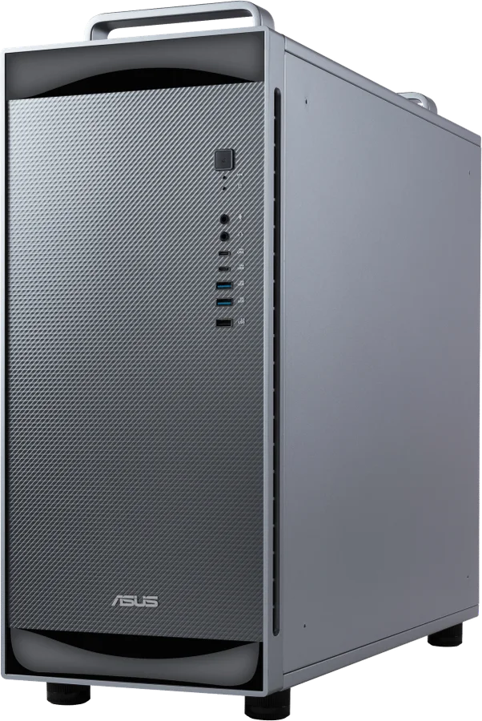

ASUSPre-booking

AI Workstations & Deskside
ASUS ExpertCenter Pro ET900N G3
Deskside AI supercomputer on NVIDIA DGX Station architecture with the GB300 Grace Blackwell Ultra Desktop Superchip.
- Superchip: NVIDIA GB300 Grace Blackwell Ultra
- Memory: 748 GB coherent memory
- AI performance: Up to 20 PFLOPS